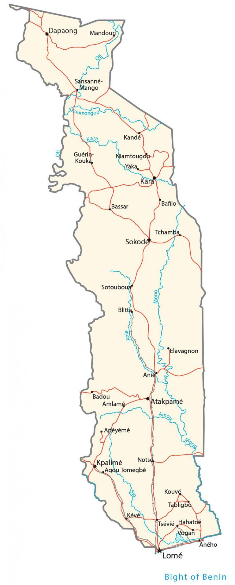

Togo is a country in Western Africa, along the Gulf of Guinea. It borders just 3 African countries including Burkina Faso to the north, Benin to the east, and Ghana to the west.
Togo is known for its beaches, lagoons, and hilltop villages. It’s narrow from east-west (only 160 km or 99 mi) wide but it stretches 579 km (360 mi) to the north. Lomé is the capital and largest city of Togo. Other major cities are Sokodé, Kara, and Kpalimé.
Go back home